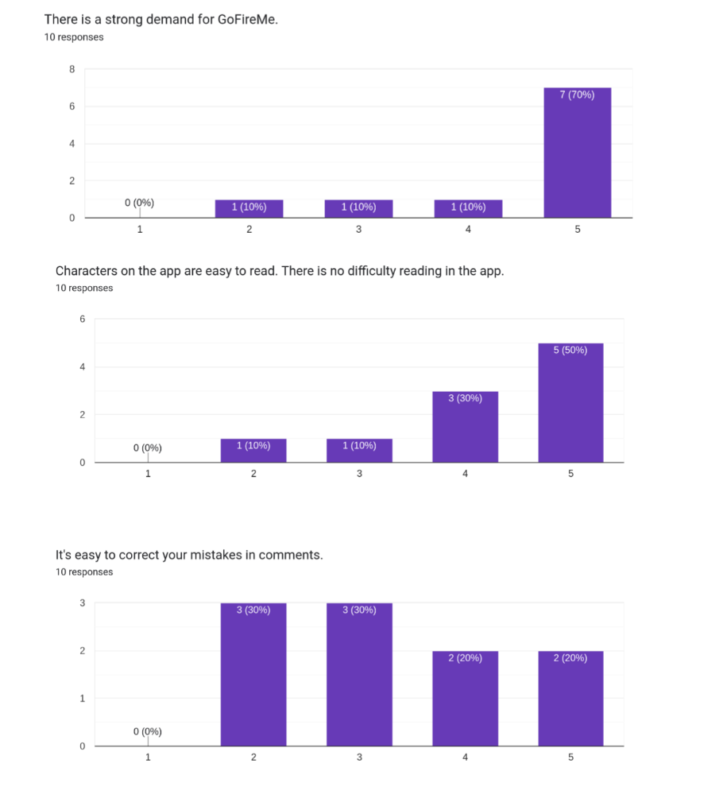
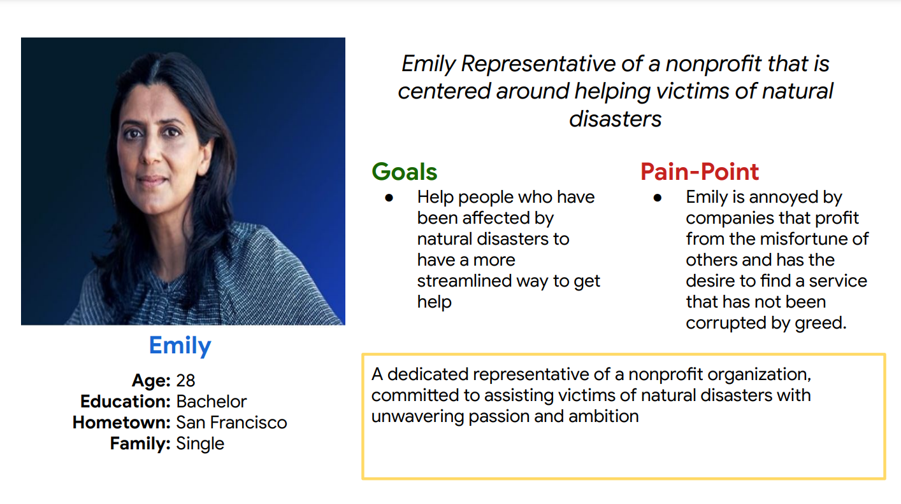
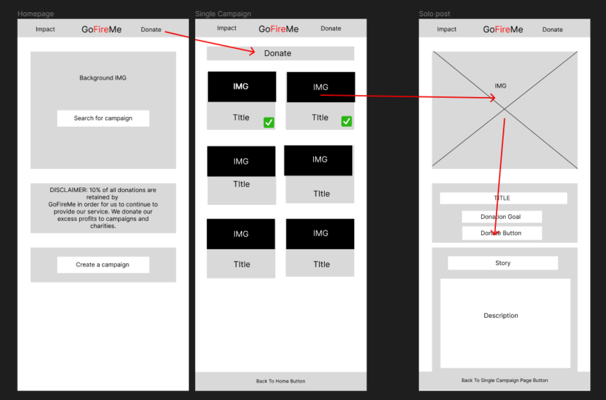
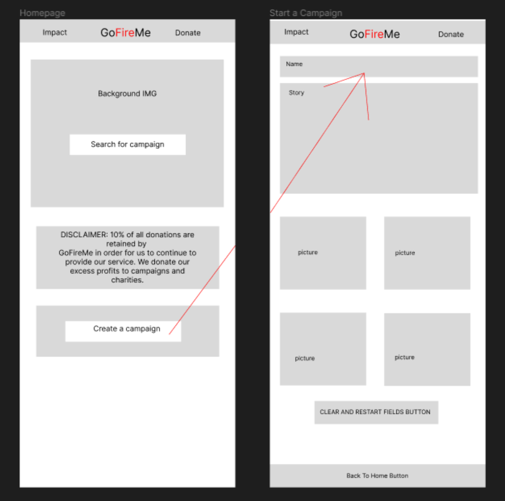
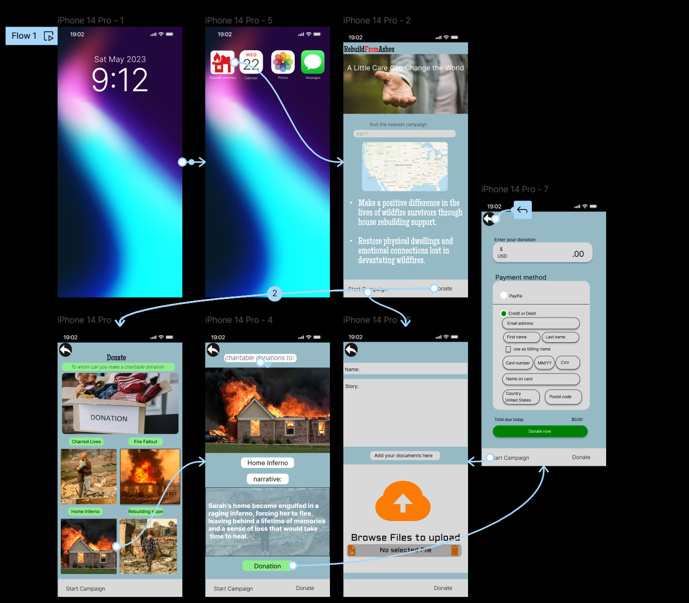

RebuildFromAshes
Introduction/Overview
The "Rebuild from Ashes" app is a project I worked on in collaboration with a team of developers, designers, and stakeholders. Our aim was to create a user-centered solution for individuals who have been affected by devastating wildfires. The project duration spanned six months, from initial research and ideation to the final implementation and testing phase.
My role: UX Designer with Research ContributionsThe primary user problem we identified was the significant loss experienced by people whose homes and belongings were destroyed by wildfires. We recognized the need for a centralized platform that would allow these individuals to communicate their needs and connect with generous donors who could provide support during the recovery process.
To tackle this challenge, we employed a variety of tools and methods. We conducted extensive user research to gain insights into the specific pain points and requirements of wildfire victims. This included interviews, surveys, and contextual inquiries to understand the emotional and practical aspects of their experiences.
Based on the findings, we proceeded with the UX design process, which involved defining user personas, creating wireframes and prototypes, and conducting iterative testing and refinement. We also utilized collaborative design workshops and brainstorming sessions to generate creative ideas and validate our design decisions.
Throughout the project, we employed industry-standard design tools such as Figma for creating visual designs and interactive prototypes. User testing sessions and feedback loops helped us validate and improve the app's usability, ensuring it met the needs of both wildfire victims and potential donors.
To bring the project to life, we utilized various tools and methods. Figma was our primary design and prototyping tool, allowing us to collaborate effectively and create high-fidelity designs. Additionally, we conducted user testing sessions using tools like Maze and conducted remote research interviews using platforms such as Zoom to gather feedback and validate our design choices.
UX Design Process
In order to create a user-centered solution for the "Rebuild from Ashes" app, we followed a comprehensive UX Design Process. This involved several key steps, each serving a specific purpose in addressing the user problem and delivering an effective solution.
- User Research and Analysis: We conducted in-depth user research, including both qualitative and quantitative analysis. This involved interviews, surveys, and studying existing data to understand the needs, motivations, and pain points of wildfire victims. This research formed the foundation of our design decisions and helped us empathize with our target users. 
- Persona Building and Affinity Mapping: Based on our research insights, we developed user personas to represent the different user groups and their goals. We used affinity mapping techniques to organize and visualize user needs, desires, and pain points. This exercise ensured a deep understanding of our users and guided our design choices. 
- Wireframing: We created low-fidelity wireframes to outline the app's structure, layout, and flow. These wireframes served as a blueprint for the interface, allowing us to focus on information architecture and user interactions without getting caught up in visual design details.  
- Prototyping and Iteration: We developed high-fidelity interactive prototypes using tools like Figma. This allowed us to simulate the app's functionality and test it with real users, gathering valuable feedback for refinement. We conducted iterative design cycles, making trade-offs and incorporating user insights to improve the usability and effectiveness of the app. 
- User Testing: We conducted user testing sessions with wildfire victims and potential donors. This involved observing users as they interacted with the prototypes and collecting feedback on their experience. User testing helped us validate design decisions, identify pain points, and make necessary improvements to enhance the overall user experience.
Link to the survey: Survey Link
Throughout the UX Design Process, collaboration played a crucial role. We fostered open communication and collaborated with team members, stakeholders, and wildfire victims to gather insights, validate ideas, and ensure the final design met the needs of all involved parties.
User Research
User research played a pivotal role in shaping the design of the "Rebuild from Ashes" app. By conducting thorough research, we aimed to uncover user behaviors, needs, and motivations, eliminating assumptions and guesswork to create a truly user-centered experience.
User Research Methods
- User Interviews: We conducted in-depth interviews with wildfire victims to understand their experiences, challenges, and aspirations. These interviews provided valuable insights into their needs, preferences, and expectations, helping us develop empathy and inform our design decisions.
- Contextual Inquiry: We visited the locations affected by wildfires and observed users in their natural environment. This approach allowed us to gain a deeper understanding of their behaviors, workflows, and pain points, enabling us to design solutions that truly addressed their real-world needs.
- Competitive Analysis: We conducted a thorough analysis of existing platforms and services aimed at wildfire victims and disaster recovery. This analysis helped us identify gaps, understand industry best practices, and differentiate our app by offering unique features and a better user experience.
- Surveys: We distributed surveys to a wider audience, including potential donors and community members, to gather quantitative data on their willingness to support wildfire victims and their preferences for a donation platform. This data guided our decision-making and validated our assumptions.
- Usability Testing: We conducted usability testing sessions with prototype iterations, observing users as they interacted with the app's interface. This allowed us to identify usability issues, gather feedback on the app's intuitiveness and effectiveness, and make necessary improvements for a seamless user experience.
Key Findings and Impact
Through our user research efforts, we gained a deeper understanding of our target users. We identified their desire for a user-friendly platform that streamlined the process of requesting and receiving support. We also discovered the importance of transparency, trust, and security in facilitating donations. These findings directly influenced our design decisions, leading to an intuitive interface, clear communication of user needs, and the implementation of robust security measures.
Define the Problem
Based on the user research and analysis conducted, we identified a critical problem faced by wildfire victims: the lack of an efficient and accessible platform for requesting and receiving support during the recovery process. This problem was compounded by the emotional and logistical challenges experienced by individuals who lost their homes and belongings in wildfires.
Insights from Research
- Quantitative Analysis: Our survey results revealed that many potential donors expressed willingness to help wildfire victims, but lacked a convenient and trustworthy channel to do so. This highlighted the need for a user-friendly donation platform that inspired confidence and facilitated seamless transactions.
- Qualitative Analysis: Through user interviews and contextual inquiries, we discovered the frustration and difficulty experienced by wildfire victims in communicating their needs and receiving targeted support. They expressed a desire for a centralized platform that allowed them to articulate their requirements clearly and connect with empathetic donors who could provide the assistance they needed.
- Competitive Analysis: Our analysis of existing platforms for disaster recovery revealed a lack of customization, transparency, and ease of use. This presented an opportunity to design an innovative solution that addressed these shortcomings and offered a seamless and secure user experience.
Problem Statement
The problem statement for the "Rebuild from Ashes" app is as follows: "Wildfire victims lack a streamlined and secure platform that enables them to communicate their needs effectively and connect with compassionate donors who can provide targeted support. Existing solutions in the market fall short in terms of customization, transparency, and ease of use. Our goal is to design a user-friendly and trustworthy app that empowers wildfire victims to rebuild their lives by connecting them with generous donors in a secure and transparent manner."
Ideation Steps to come up with a solution
The ideation phase involved a range of UX tools and techniques to generate and refine design ideas, ensuring the proposed solution effectively addressed the user problem. By combining project requirements with user research insights, we created relevant design artifacts that guided the development of the app.
Key Deliverables
- User Flows: We created user flows to map out the various paths and interactions users would have with the app. This helped us identify potential bottlenecks and areas for improvement, ensuring a seamless and intuitive user experience.
- Storyboard: We developed a storyboard that visually depicted the user journey, showcasing key touchpoints and highlighting the emotional aspects of the experience. This allowed us to align the design direction with the desired user outcomes and create a compelling narrative.
- Site Maps: We created site maps to organize the app's structure and content, ensuring logical navigation and clear information hierarchy. This helped us consider the overall architecture of the app and facilitated effective communication between the design and development teams.
- Sketches and Prototypes: We used paper sketches and low-fidelity prototypes to rapidly explore and iterate on design ideas. These quick iterations allowed us to test concepts, gather feedback, and make informed decisions before investing significant time and resources in higher fidelity designs.
- Medium Fidelity Wireframes: We developed medium fidelity wireframes to visually represent the layout, structure, and functionality of the app. These wireframes helped us refine the user interface, incorporate feedback, and align with the project requirements and user research insights.
By utilizing these deliverables and techniques, we were able to generate a wide range of ideas, evaluate their feasibility, and refine the proposed solution based on user feedback and design best practices.
Test Solution and Iteration
-
Testing and Validation:
- Conducted extensive user testing sessions to gauge the impact and usability of the app.
- Encouraged users to interact with the prototype in realistic scenarios, providing feedback and sharing their experiences.
- Identified areas for improvement, validated design decisions, and addressed usability issues.
- Observed positive user reactions to the intuitive interface, streamlined donation process, and personalized support features.
- Received user appreciation for the transparency and security measures implemented in the app.
- Noticed that users appreciated the ability to articulate their needs clearly and connect with empathetic donors.
-
Iteration and Refinement:
- Iterated on the design based on user testing feedback and data analysis.
- Addressed identified pain points and areas for improvement.
- Refined the user interface, enhanced responsiveness, and implemented additional features.
- Continuously improved the app's usability, addressing user needs and aligning with evolving user expectations.
- Engaged in open communication with users, incorporating their suggestions and feedback to create a more robust and user-centric solution.
-
Impact and Business Goals:
- Achieved significant business goals and user satisfaction.
- Noticed an increasing number of successful donations and positive feedback from users and donors.
- The app's intuitive design and personalized support features created a sense of trust.
- Resulted in higher engagement and repeat usage.
- Successfully addressed the problem faced by wildfire victims.
- Provided a user-friendly and secure platform that facilitated support, streamlined communication, and empowered individuals to rebuild their lives after devastating wildfires.
- Observed improved user engagement and outcomes after changing the website name from "goFireMe" to "RebuildFromAshes" based on user feedback.
Next Steps and Learning
Key Learnings
- Deepened Understanding of User Needs: Through user research and testing, we gained a deeper understanding of the needs, challenges, and motivations of wildfire victims. This knowledge will be valuable in future projects aimed at supporting individuals in crisis and disaster recovery.
- Iterative Design Process: The iterative design process reinforced the importance of user feedback and continuous improvement. We learned that design is an ongoing journey, and incorporating user insights throughout the development process leads to more effective and user-centric solutions.
- Collaboration and Communication: The project highlighted the importance of collaboration and open communication with team members, stakeholders, and users. We learned that effective collaboration fosters innovation, strengthens ideas, and ensures the final design meets the needs of all stakeholders.
Next Steps and Future Plans
- Continued User Testing and Iteration: The app will undergo continuous user testing and iteration to address any evolving user needs and expectations. This will ensure the app remains relevant, user-friendly, and effective in facilitating support for wildfire victims.
- Expansion to Other Disaster Recovery Areas: Building on the success of the app, there are plans to expand its functionality and adapt it for other disaster recovery contexts. This will help more individuals in crisis receive the support they need.
- Partnerships and Community Engagement: Forming strategic partnerships and engaging with the community will be essential to reach a wider audience, promote the app's mission, and facilitate a larger impact in supporting disaster recovery efforts.
Overall, the learnings from this project and the envisioned next steps will guide future design endeavors, allowing for continued growth, innovation, and the creation of user-centered solutions.
For the final design, you can view the complete Figma prototype here.